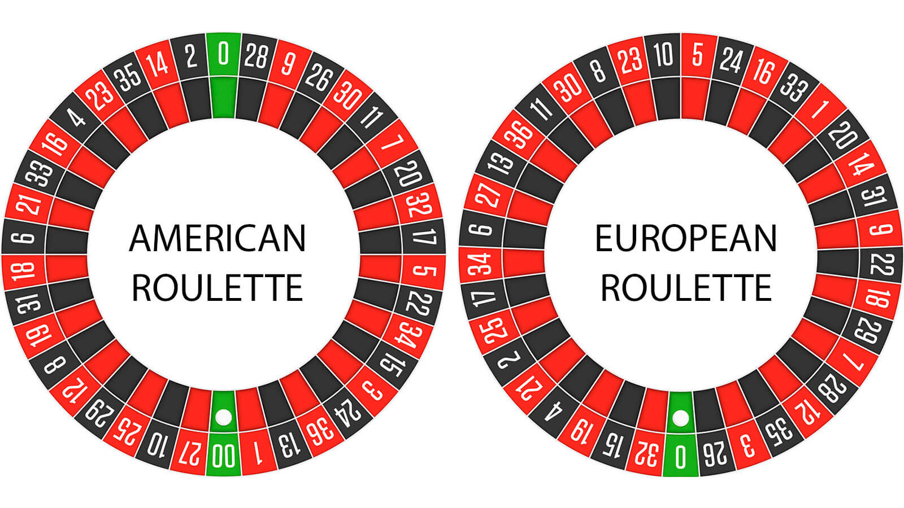

It might come as a surprise that the roulette wheel was first invented by Blaise Pascal: a philosopher, physicist, mathematician and one of most brilliant minds in European history. Around 1655, he tried to invent a perpetual motion machine, which (sadly?) did not succeed, by using a spinning disk similar to the one used in roulette. Through a later addition of the zero in the 19th century, which gave the house a greater edge, Pascal's invention turned into the popular casino game played across the world today.
A ball is spun in a wheel, inside which are slots with corresponding numbers 0-36. The goal of the player is to guess in which of these slots will the ball end up. To do this the players bet on the numbers using a table that looks something like this:
The outside are the 1-18, 9-36, red, black, odd and even bets. These pay out one to one, meaning if you bet $2, you win 4$. The 12th bets and the columns bets (also part of the outside) pay out 2 to 1, meaning if you bet $2 dollars you win $6. You have to bet the table minimum on outside bets.
The inside are the bets on the individual numbers. Here the total sum of the bets must be at least equal to the table minimum. You can bet straight up on a number, meaning you choose one number that the ball will land on. If you win you get paid 35 to 1. You can also put a chip on a line, which indicates a bet on more than one number at a time. A two number bet pays 17 to 1. A three number bet pays 11 to 1. A four number bet (also called the corner) pays 5 to 1. So how do you beat the odds and win some money?
The rules of this strategy are that each time you lose, you double your previous bet. This is because if you win, you profit and recover your previous losses. Nonetheless, this strategy has the drawback of being very expensive. Let's look at some math.
If all n bets lose, the total loss is
Therefore, the money spent increases exponentially. When represented graphically, it looks like this
You can play with the value of the initial bet using a slider in desmos (replace n with x).
If qn is the probability that one will lose all bets, the expected profit per spin is
Therefore, if the probability of losing q is greater than 0.5, the gambler is expected to lose money. In the case of this strategy, the loss will grow exponentially, therefore it is probably not recommended in the long term. Here is how this looks graphically, with q set to 34/35, the expected loss if betting on an individual number.
You can see that the loss grows exponentially. This means that on average, the martingale strategy is bound to make one lose money in roulette. The loss is greater when betting on low odd outcomes, thus it is much better to use this strategy when betting on the outside than on individual numbers or pairs of numbers.
There is one special circumstance, in which the martingale strategy can work. Assume that I walk into a casino with $50 in my wallet, and I desperately need $52 dollars for a video game. To achieve this, I should bet the smallest amount possible to achieve my goal, which in the case of the first bet is $2 and each subsequent one is my previous loss + $2. There is about a 95% chance I achieve this goal if I bet on the outside, and thus the martingale method could be advisable.
Named after Jean le Rond d'Alembert, the 18th century French mathematician and physicist, this betting system is quite similar to the martingale. It works best when betting on the outside. If you bet $1 and you lose, the next bet you put out $2, similar to the martingale. However, when you win, you decrease your next bet by one. An example game would look something like this:
1. Bet $1; lose.
2. Bet $2; lose.
3. Bet $3; win.
4. Bet $2; win.
5. Bet $1; lose.
6. Bet $2.
This system is apparently good for managing winning or losing streaks, however truthfully, streaks do not exist in roulette, as each spin is independent from the previous one (see gambler's fallacy). The probability of winning is the same as the probability of winning when you won the two previous times. Furthermore, you will (on average) always lose money in a casino, due to something called the house edge.
Have you ever wondered what the purpose of the green zero is on the roulette wheel? And how does a casino make money if it is also technically gambling? This is where the house edge comes in. It is defined as the percentage advantage that the casino will have compared to a gambler. This is necessary for the casino to make a profit, as 50/50 odds, would on average make the casino lose money, due to operating costs. There are also other sources of profit for a casino, such as selling drinks, however the house edge is still very important. It usually ranges from 1-16 %. Here is how it can be calculated for roulette
The house edge for roulette is relatively low, therefore in the US most casinos have an additional double zero on the wheel. There are 37 possible numbers, but the payout for the gambler is 35 to 1, because of the house edge phenomenon. Long term, the house always profits.
If you flip a coin 49 times, and it has been consistently landing on heads all the time, you might think that there is a higher chance of the 50th flip being heads. But, assuming that nothing is physically biased with the coin or your throws, the probability of heads is still just 1/2. A coin landing on heads 49 times is extremely unlikely, in fact the probability of that happening is
This is extremely unlikely, yet it could happen. And in fact it does happen. In 1913, in the Monte Carlo casino, the roulette wheel has landed on black multiple times in a row. People started thinking that they are on a streak, and started betting larger and larger sums of money, thinking that the wheel must land on red. However, it took 27 spins for the wheel to land on red, which led to millions of dollars being lost according to accounts. This is the best example of the gambler's fallacy, for which another name is the Monte Carlo fallacy, named after this infamous night. A gambler might think that a certain event is more or less likely, given a previous series of events, which is mathematically unreasonable. This thinking may lead to people implementing the d'Alembert strategy etc. however none are mathematically justified, especially if the house edge is considered.
Jordan Ellenberg writes extensively about this fallacy in other contexts, in his book "How to Not be Wrong; The Power of Mathematical Thinking", which I highly recommend checking out.
As you can see, no matter the intricacy of your betting system or belief in luck, there is no way to overcome the house edge and on average you will lose money. However, all the above calculations were performed assuming a perfect roulette wheel. This is an impossibility, since roulettes are physical objects that are destined to have some degree of imperfection, which could influence the odds. The first and most prominent person that used a method to predict the bias of the roulette was Joseph Jagger at Monte Carlo in 1873, who because of this won huge sums of money. In the 60s, Edward O. Thorp and Claude Shannon built the first computer to predict roulette results. Later this method evolved to using lasers and other intricate mechanisms, but in general it allowed certain crafty individuals to win large amounts of money. This method works by analysing the result of many roulette spins and seeing if the ball is more likely to land in certain slots than others. If for example, one saw that the likelihood of winning when betting on black is 54% (or anything above 50%), using the martingale strategy would yield an expected profit of
where the initial bet is $2 and there are 30 rounds played. This is a percent profit of
Thus the value of predicting mechanical bias of the roulette wheel is clear. You can now try on your own to see if you can use the martingale combined with the prediction method to calculate the profit you would make on this coin flip. The answer will be down below, but remember that you choose the initial bet value, therefore it might be slightly different. I will keep using $2 for my own calculations. Hopefully, using a coin flip makes it easier and more understandable.